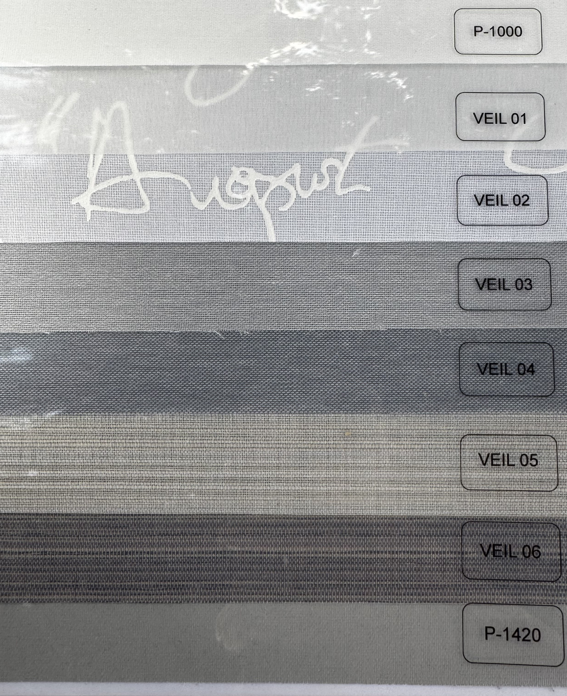
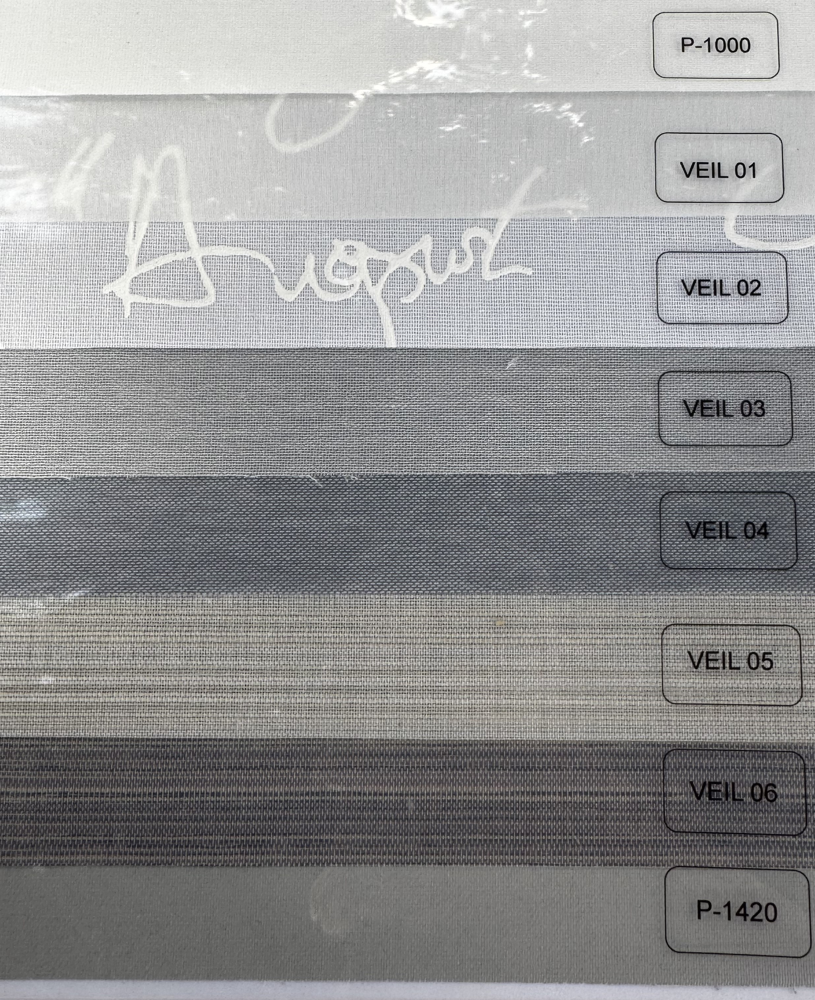
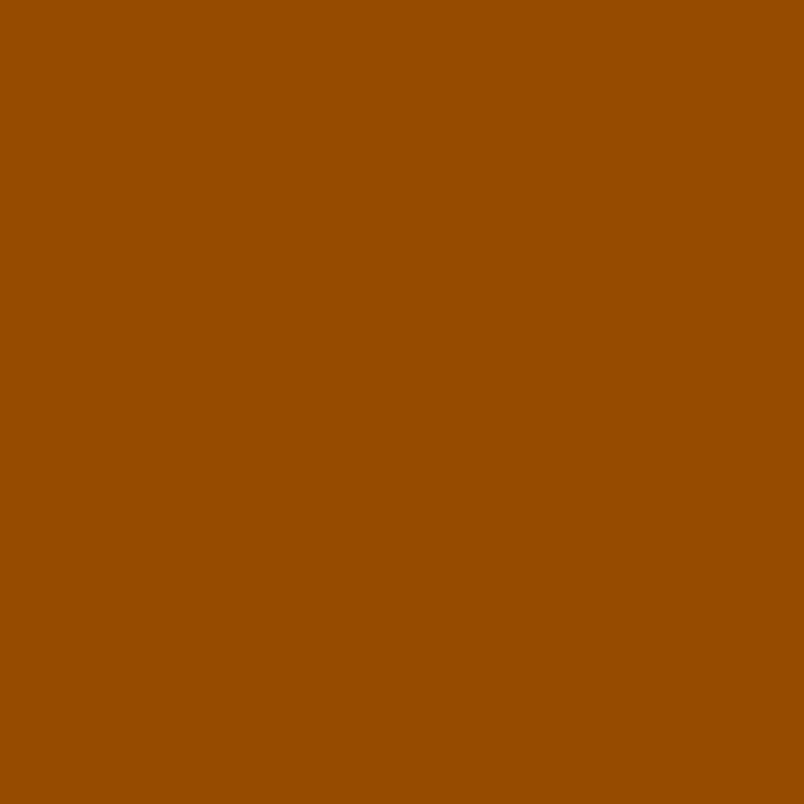
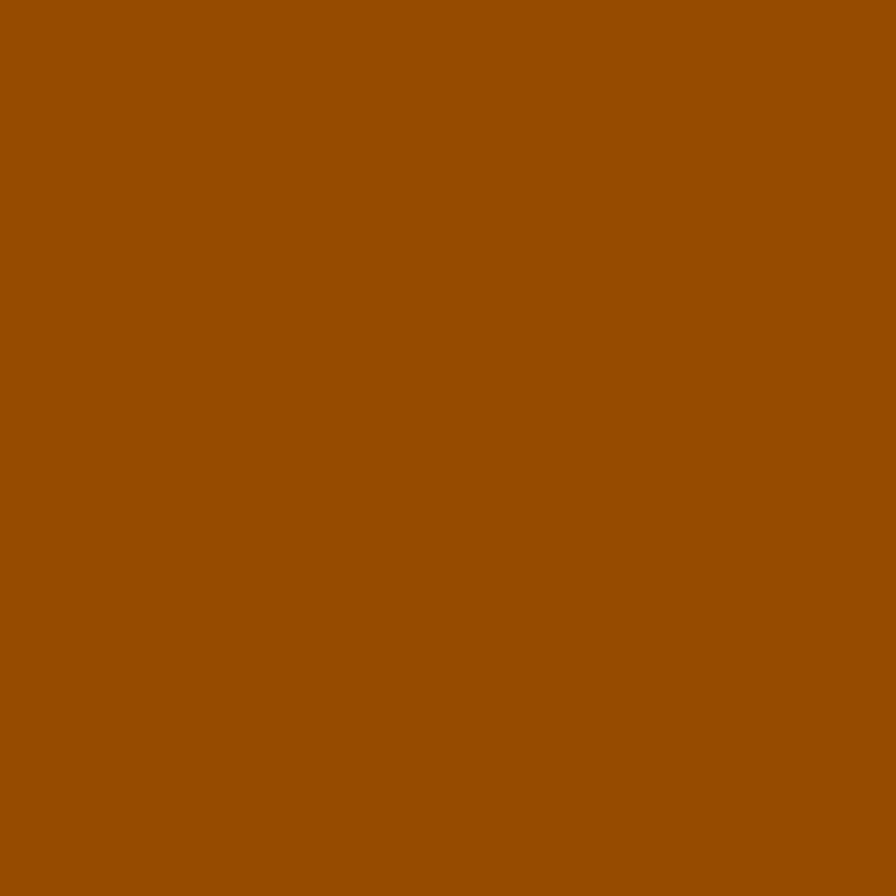

Рулонные шторы
Минималистичный и функциональный вариант оформления окон. Подходят как для домашнего интерьера, так и для офисов. Имеются варианты с пружинным или цепочным механизмом, открытым и закрытым коробом, с возможностью полного затемнения.
от 210 ₽


 


Шторы «День-Ночь»
Комбинация прозрачных и плотных полос ткани позволяет регулировать уровень освещённости без необходимости полностью поднимать штору. Подходят для любого интерьера — от офисов до уютных спален. Доступны в различных цветах и текстурах.
от 325 ₽


Римские шторы
Элегантный и классический выбор для оформления окон. Тканевые панели складываются аккуратными складками, создавая уютную атмосферу. Подходят для гостиной, спальни и офиса.
от 325 ₽

Вертикальные жалюзи
Элегантное и практичное решение для офисных и жилых помещений с большими оконными проёмами. Ламели из ткани, пластика или ПВХ легко поворачиваются и сдвигаются. Устойчивы к выгоранию и хорошо пропускают свет при необходимости.
от 296 ₽

Горизонтальные жалюзи
Классический выбор для окон любого типа. Алюминиевые или пластиковые ламели шириной 16–25 мм, устойчивы к влаге, просты в уходе. Часто используются на кухнях и в ванных комнатах. Эффективно защищают от солнечных лучей и взглядов с улицы.
от 145 ₽
 


Бамбуковые шторы (Деревянные)
Натуральный и экологичный вариант. Изготовлены из тонких бамбуковых планок, хорошо фильтруют свет и создают атмосферу природного тепла и уюта.
от 325 ₽